前情提要还是建议完整阅读一下动森贴。
首先要理解柯哀与北斗七星的关系。
这篇帖子重点说一下柯哀初遇和北海道的关系。
首先是77话封面的太阳光柱。
首先要理解柯哀与北斗七星的关系。
这篇帖子重点说一下柯哀初遇和北海道的关系。
首先是77话封面的太阳光柱。
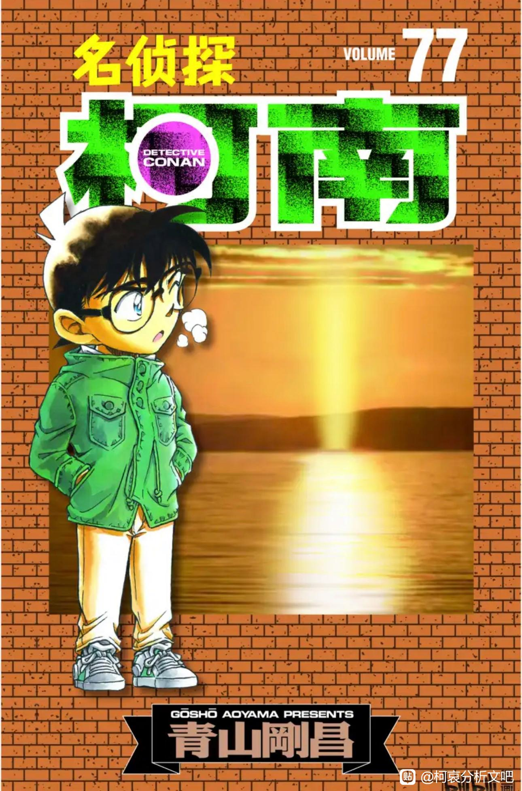
这几话是高木被绑架，佐藤天降开枪躲炸弹救他的那个篇章。请注意，柯哀二人对于太阳光柱现象解读的这里，背后的画面边框有涂黑，疑似是回忆画面。两人回忆里似乎出现了同样的一幕。
而这一现象在日本只有北海道发生过。还上了新闻。
而这一现象在日本只有北海道发生过。还上了新闻。
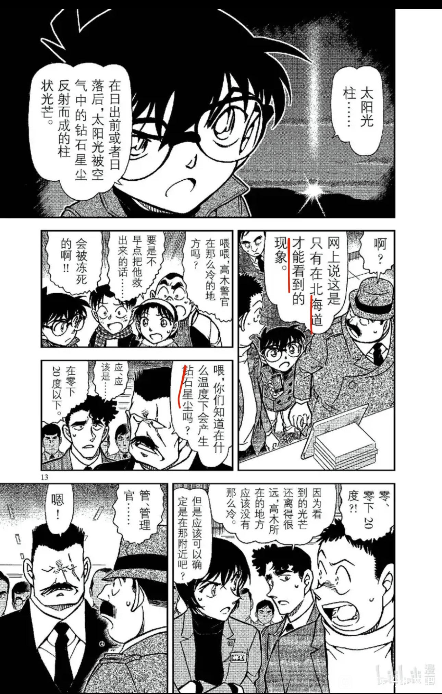
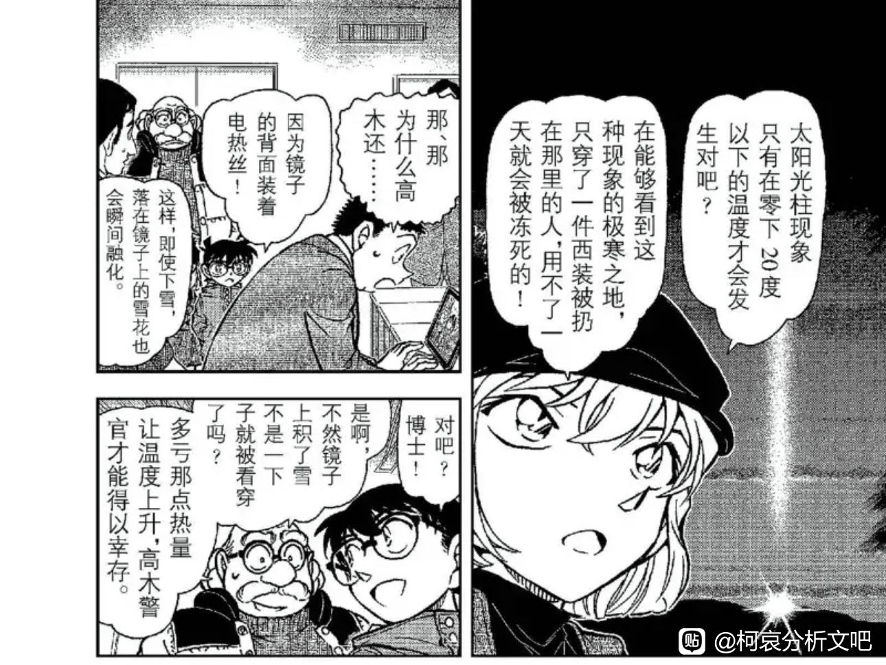
关于太阳光柱的成因“钻石星尘”也在M15中出现过。这一幕很经典，是失忆的冬马回忆起过去的契机。
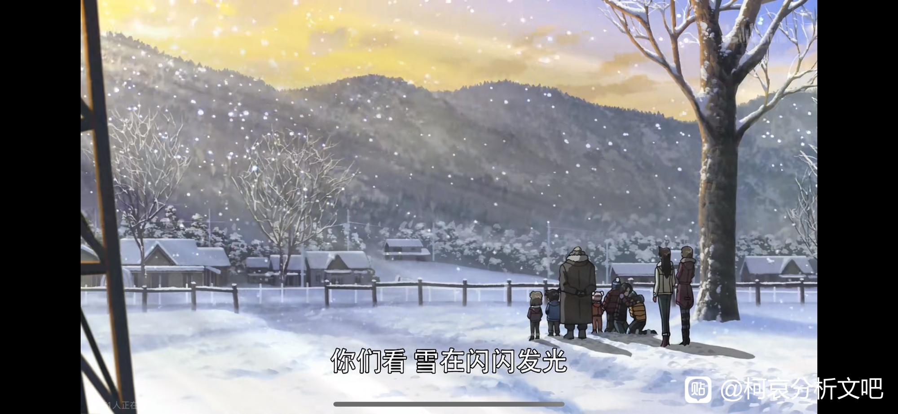
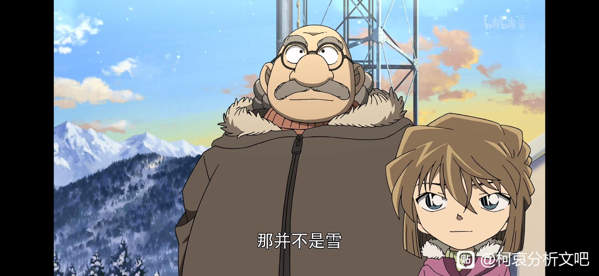
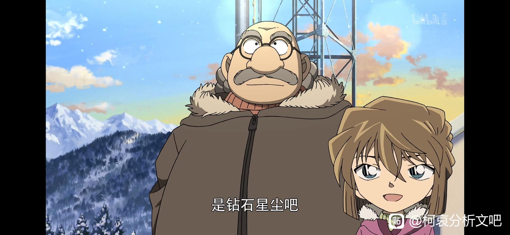
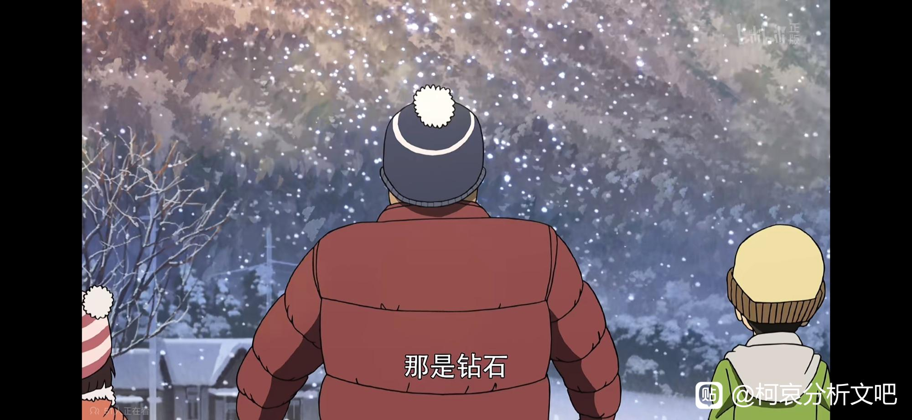
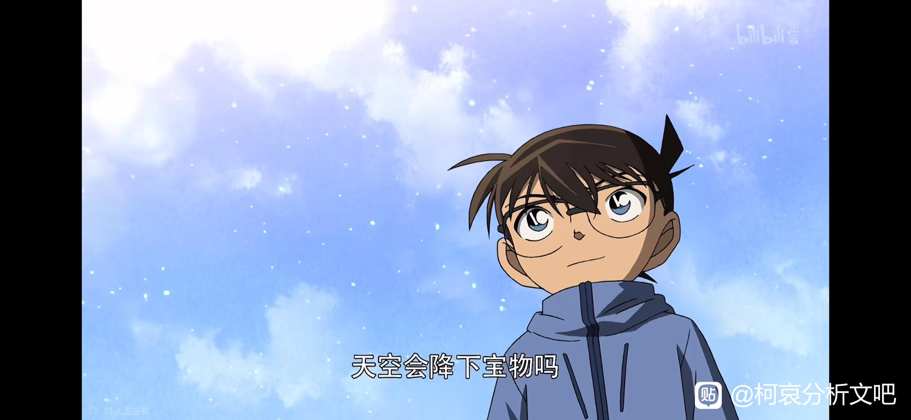
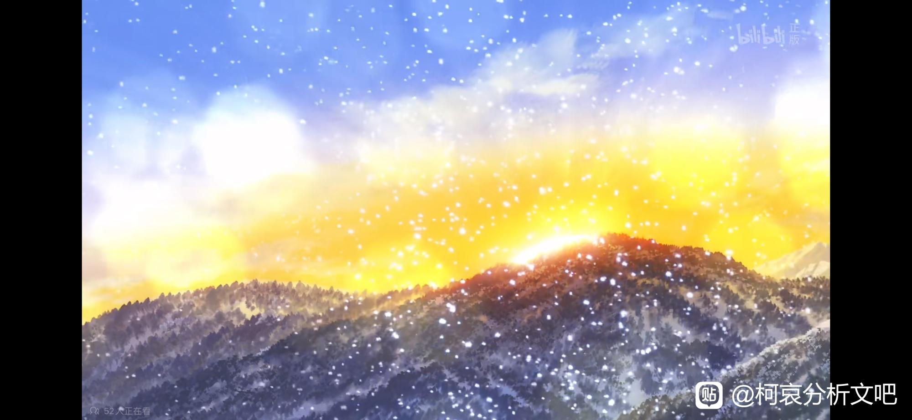
2024-03-10 07:33 | 放假最快乐:m15那个村子是新瀉，好像在霓虹东北
再结合一下樱花篇开头，工藤优作的这句话。
北海道的签售会听上去是在樱花班开学前一段时间，初遇在北海道的可能性是有的。
加上北斗星号的终点站是北海道的札幌。
北海道的签售会听上去是在樱花班开学前一段时间，初遇在北海道的可能性是有的。
加上北斗星号的终点站是北海道的札幌。
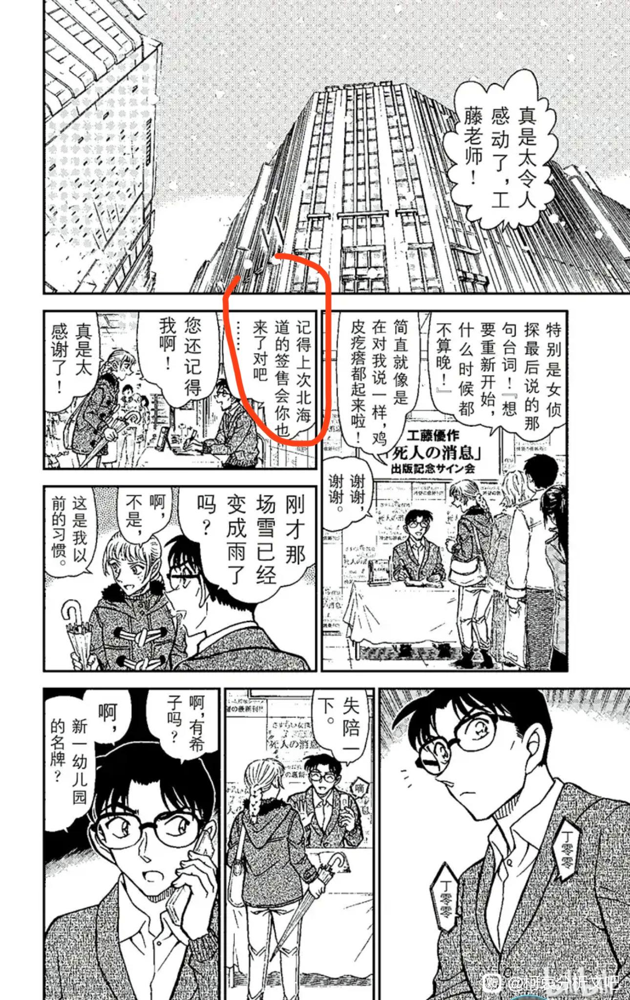
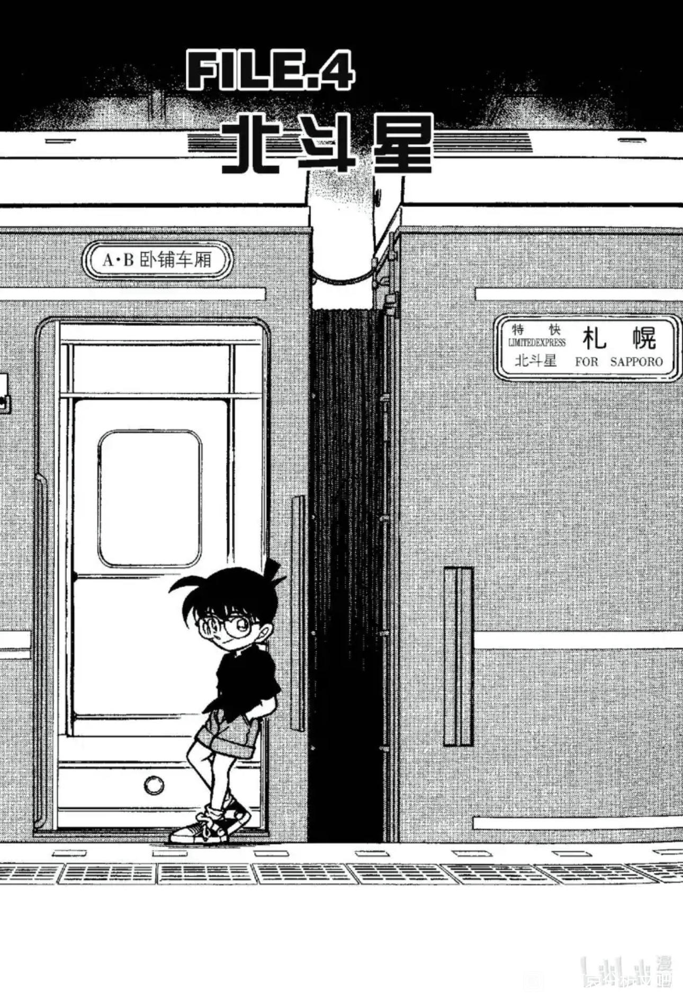
这么细？
结合一下77卷的目录：工藤优作的未解决事件
关于封面和目录标题与青山伏笔的关系具体还是要看动森贴。
新志初遇被掳走的志保事件—>是工藤优作的未解决事件。
关于封面和目录标题与青山伏笔的关系具体还是要看动森贴。
新志初遇被掳走的志保事件—>是工藤优作的未解决事件。
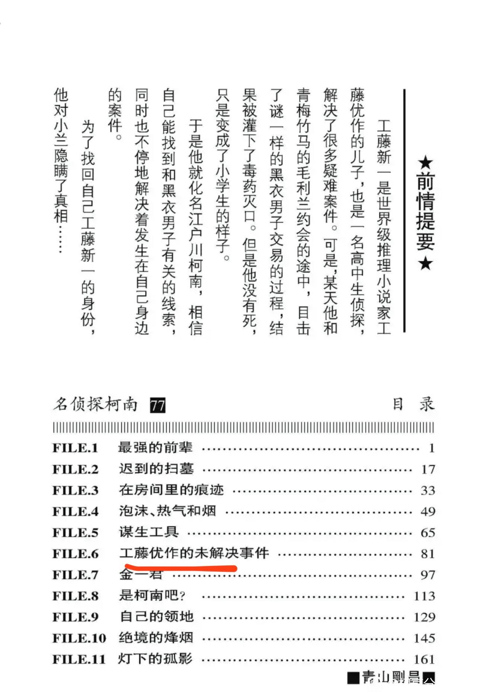
初遇肯定不是在北海道，北海道只是北斗的延申。 初遇的地点锁定在工藤家。
2024-02-12 07:46 | 雁影◇妃:为什么在工藤家2024-02-12 07:47 | 贴吧用户_0795E8E:回复 雁影◇妃 :原因太多了，但是新一家是一刻馆是初始出发点。 可以看家门口特意安装的圆月灯2024-02-12 07:49 | 雁影◇妃:我觉得有点扯太远2024-02-12 07:52 | 咕咕188:回复 雁影◇妃 :别整当年厚司拜访过工藤家，柯第一集戴的眼镜是厚司留下的，太强行了2024-02-12 07:53 | 贴吧用户_0795E8E:回复 雁影◇妃 :年龄时间设计是比较扯，但是他在这个上面做了非常多的安排。包括书房地板的黑白，隐藏在扉页中的点滴，哀回来时候爬到的地方等等2024-02-12 07:55 | 贴吧用户_0795E8E:回复 咕咕188 :这个大概率是有的，不过原因应该是安排了儿时邻居的情况。这个其中的原因比较复杂是家族的东西。2024-02-12 07:57 | 额丶晕了:回复 咕咕188 :讲真的，拜访工藤家都不如拜访博士家然后串门博士的时候相互认识的，宫野夫妇现在好像没有直接串上工藤夫妇的关联吧2024-02-12 07:58 | 世界上没有真理:回复 雁影◇妃 :北海道確實很有可能，柯哀跟雪還有星星的連結實在太深，那麼就是志保被擄走，工藤一家才來到東京?2024-02-12 08:11 | 贴吧用户_0795E8E:回复 世界上没有真理 :差不多整个日本海那边的沿海地区都是重雪区，也不一定要去北海道才弄得到厚雪。不过男主家乡是大雪区是一个肯定的设定，但是这个地方也可以是鸟取。2024-02-12 08:13 | 贴吧用户_0795E8E:回复 额丶晕了 :也可以是通过博士认识但是对眼应该是新一家玄关。2024-02-12 08:21 | 额丶晕了:回复 贴吧用户_0795E8E :突然才看清楚上面的内容，这里讲的是初遇论啊，新志初遇现在看上去和宫野夫妇可插不上联系啊，宫野夫妇都已经离世了，最多就只能关联上明美。2024-02-12 08:32 | 贴吧用户_0795E8E:回复 额丶晕了 :不太清楚情况不过地点安排是初衷其他可以围绕来设计2024-02-12 09:26 | 贴吧用户_0Q8721R:回复 贴吧用户_0795E8E :这个可以在哪个帖子看啊？2024-02-12 10:31 | airxk:不太可能，樱花班是转学过去的，这种转学一般都伴随搬家，所以现在的工藤家已经是初遇之后才有的了2024-02-12 10:45 | 贴吧用户_0795E8E:回复 airxk :一开始是在这里然后搬去la了。相遇也是回归的故事。两边都有房子2024-02-12 11:09 | airxk:回复 贴吧用户_0795E8E :你的意思是出生在这个房子里，原本4岁从la回来只是短期停留，遇到事情了才变成长期回归所以转学？但我还是觉得如果存在必须转学的事也会需要同时搬家，否则仅仅换个学校没太大意义2024-02-12 12:29 | 贴吧用户_0795E8E:回复 airxk :这个情况我会在其他地方说一下，指向是现实层面的东西所以才要比较强硬的安排成这样2024-02-12 20:39 | 好几口呢啊:哦

北海道重不重要还得看m27会整什么活
感觉很有理，看m27吧
我觉得北海道未必和柯哀初遇有关，但是可能跟十年前的哀和快青新兰有关，我觉得需要注意一下的是平新在雪山的擦肩而过的初遇。北海道可能不是初遇，而是新志擦肩而过。
2024-02-12 08:41 | minisaltearth:当然更有可能是快志擦肩而过……2024-02-12 09:05 | 好几口呢啊:但是按照一般假设初遇论是在13年前的话，那么10年前这个节点哀不是应该已经去美国留学了吗？2024-02-12 09:17 | minisaltearth:回复 好几口呢啊 :建议看一下贝姐纽约篇自述家庭背景……基本上父母对应宫野夫妇，女儿对应宫野姐妹之一是可能的。贝姐的家庭组成是她用演技坑过的几个她很重要的人。2024-02-12 09:31 | 好几口呢啊:回复 minisaltearth :你的意思是10年前贝姐带着志保去的北海道？我没有get到贝姐和志保10年前在北海道有什么关系2024-02-27 13:43 | 凌蘭诗:回复 minisaltearth :为什么是快志？
关于雪我觉得漫画里有一次雪中柯布的镜头里步美非常的毛利兰，就是少侦在雪中找人那次，所以这里觉得这一篇映射新兰+平新初遇+快青+哀可以拼凑一次十年前的大概。
m27和红修篇是对照的，红修篇兰看见冲铁，m27要让哀看见快青。而这两篇可以追溯到十年前的某个事件，这个事件有新兰快青志，这个时候兰知道志保的存在。
目前可以假设的是红修篇毛利兰把铁诸羽认成十年前的宫野志保了。
目前可以假设的是红修篇毛利兰把铁诸羽认成十年前的宫野志保了。
2024-02-12 09:16 | 梦里看海218:可是这样的话魔快算不算并入本作了？2024-02-12 09:18 | minisaltearth:回复 梦里看海218 :不算吧，青子在m27出现是肯定的……这里快青的作用和红修冲铁的作用是一样的。2024-02-12 09:20 | 梦里看海218:回复 minisaltearth :那我可以理解为：m27里发生了什么事让兰把十年前的志保投射到了青子身上？2024-02-12 09:30 | minisaltearth:回复 梦里看海218 :……不是这里跟兰没关系，快青是给哀看的。 冲铁才是给兰看的。2024-02-12 09:33 | 贴吧用户_J7PXaNQ:兰十年前为什么会知道志保？真知道的话，她现在真看不出来灰原长的和志保像吗？2024-02-12 09:37 | minisaltearth:回复 贴吧用户_J7PXaNQ :兰对于工藤新一出轨对象一律想象成是浅色发色你不觉得很奇怪吗？以及她认出来又怎样？“连我也嫉妒了呢”也没人care啊。2024-02-12 09:37 | 贴吧用户_J7PXaNQ:您的意思是让哀看见青子再映射到兰身上？2024-02-12 09:39 | minisaltearth:回复 贴吧用户_J7PXaNQ :不是，是十年前的某个事件，说不清楚，但是快青和冲铁确实分别是给哀和兰上buff的2024-02-12 09:47 | 贴吧用户_J7PXaNQ:回复 minisaltearth :那我可不可以这样想，即然冲铁和快青都是上buff的，十年前真正主角是柯哀兰三人，发生了一些事，哀见快青想起十年前，像兰见冲铁一样，加深三角关系，之后再具体写2024-02-12 09:54 | 贴吧用户_J7PXaNQ:回复 minisaltearth :像您新发帖子一样，十年前的事很可能是关于柯哀的相互，兰是见证者，所以产生感觉2024-02-12 10:01 | minisaltearth:回复 贴吧用户_J7PXaNQ :十年前可能不止兰看见新志，也有哀看见新兰，青山一向热衷两件事：兰哀对照和柯哀镜像。也就是说他塑造兰哀可能相同的情景相反的选择，柯哀则是倾向于先后进行同一行为。所以赤新对若哀、冲铁对快青2024-02-12 10:05 | 贴吧用户_J7PXaNQ:回复 minisaltearth :懂懂懂，感谢指导
细节啊，大佬。现在就等m27出来了
感觉初遇地点应该还是在米花吧
兰的内核是信徒，特别是对应jdj的信徒。而jdj有一个特别的内核就是“罪”文化。
兰的几点比较奇怪的点：
1、对父母分居的执着
2、对于工藤新一的对象总是浅色发色
3、伦敦篇被告白之后迟迟不给工藤新一回复
4、清水寺之吻是在毛利兰确定冲铁之后
以上，其实兰在冲铁之前其实可能有强烈的不配得感和不安全感。原因？谁猜得到呢？
兰的几点比较奇怪的点：
1、对父母分居的执着
2、对于工藤新一的对象总是浅色发色
3、伦敦篇被告白之后迟迟不给工藤新一回复
4、清水寺之吻是在毛利兰确定冲铁之后
以上，其实兰在冲铁之前其实可能有强烈的不配得感和不安全感。原因？谁猜得到呢？
2024-02-12 09:46 | 好几口呢啊:第四条很独特的见解2024-02-12 09:46 | 好几口呢啊:回复 好几口呢啊 :说错了，是结论2024-02-12 11:30 | 小杰奇犽999:对于第二点，另外一种可能莫非兰姐以前是见过哀的？2024-02-12 21:14 | 贴吧用户_J53RUM7:浅色发系目前看新兰相遇是樱花班，兰之前并不认识新一。这样看层主说的毛利兰，新一，志保三人即使在北海道相遇过，新一必然和志保接触过。2024-02-12 21:15 | 贴吧用户_J53RUM7:兰可能看到新一保护过志保，才可能警惕浅发女子。因为柯南前面兰都不知道新一和学姐的关系，说明平时可能并没太关注新一生活，而新一朋友少，兰是怎么知道新一好浅色发系这一口的。2024-02-12 21:15 | 贴吧用户_J53RUM7:要是错位论是真的，指不定新一，兰，志保这3个人应该接触过。而新一对兰一见钟情，也可能是路人兰激活了他部分丢失的记忆，把喜欢的感觉移在兰身上了。
动森完结了吗
2024-02-15 21:37 | 雁影◇妃:还没有 会继续更的
也有可能 毕竟樱花班有提到北海道，这次m27也发生在北海道，期待一手
感觉越来越真了
其实很可能只是73想不出新点子用的重复而已，因为雪花这个初遇论概念随便在那里都有可能而不见得是北海道，就好比有些人说警视厅那些情侣是对照柯哀经历可这个其实到现在都没有任何实质性的证据，是不是都是作者一句话的事，m27也有人猜测会搞大动作，连试映会都取消了，现在只有等上映后才知道。
青山提过喜欢m7的也会喜欢m27，然后m7里只有平次单方面回忆起树下拍球的是和叶。老贼想整大的就这次哀看到雪花单方回忆起新志初遇？主要这次登场人太多，还是平和主场，再塞这一段感觉要抢平和风头了
2024-02-26 20:46 | 水吸火神:既然这次哀不可能占太多出场时间，真的很有可能搞个哀看到雪花和太阳光柱产生的回忆吧2024-02-27 06:37 | 贴吧用户_Q7e6y1Q:给一帧画面就算赢了2024-03-03 21:28 | ✨浮光掠影:我觉得老贼的意思是喜欢平和的观众会喜欢M27

卧槽
看到这海报突然想到了太阳光柱（笑，已经魔怔了）
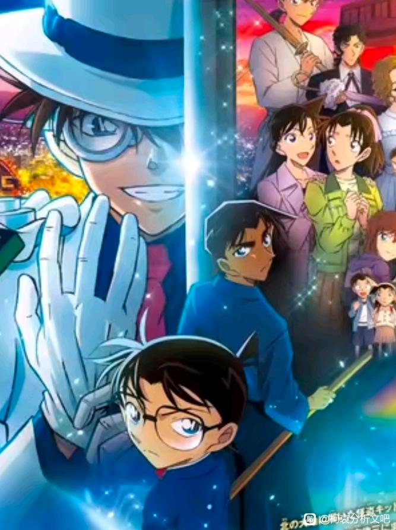
2024-02-26 20:43 | 水吸火神:越来越真了
感谢楼主分享，我深入分析了77卷漫画内容，为北海道初遇论做了一些补充。这是我的帖子，欢迎交流讨论 https://tieba.baidu.com/p/8897588146?share=9105&fr=sharewise&see_lz=0&share_from=post&sfc=copy&client_type=2&client_version=12.55.1.0&st=1708075346&is_video=false&unique=732F58FED6435E0E8B4A5CF223776373
https://tieba.baidu.com/p/8897588146?share=9105&fr=sharewise&see_lz=0&share_from=post&sfc=copy&client_type=2&client_version=12.55.1.0&st=1708075346&is_video=false&unique=732F58FED6435E0E8B4A5CF223776373
https://tieba.baidu.com/p/8897588146?share=9105&fr=sharewise&see_lz=0&share_from=post&sfc=copy&client_type=2&client_version=12.55.1.0&st=1708075346&is_video=false&unique=732F58FED6435E0E8B4A5CF223776373催更！
新志初遇最核心论据是新一志保13年前都出现在过米花，樱花班这里虽然有新一去过北海道的可能，但没有任何证据表明志保在那里。北斗七星可能有点牵扯，但新志初遇放北海道感觉属于是搬起石头砸自己的脚。
2024-03-02 23:00 | 凌蘭诗:都出现在米花不算核心论据，而是充分不必要条件，重要的是13年前这个时间节点，新志初遇论在时光胶囊之前就有了，只是时光胶囊提供了更大的可能性，非要说的话，其实世良的出现才最说明新志初遇2024-03-02 23:44 | 小石头小小😈:世良出现算什么证据啊…那只是对应关系不存在逻辑关系。就好像破案一样，世良出现到新志初遇只是推理甚至只是猜想，时光胶囊是可以作为证据的

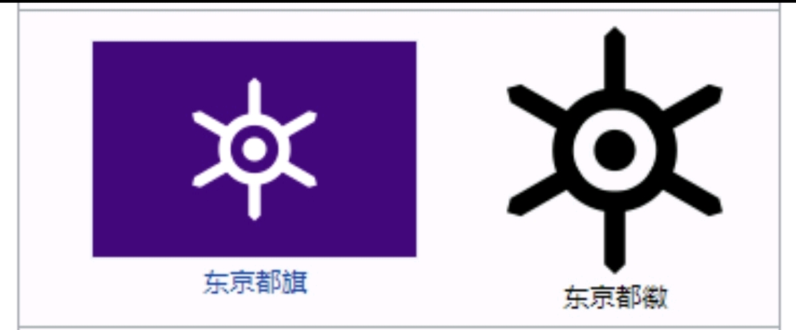
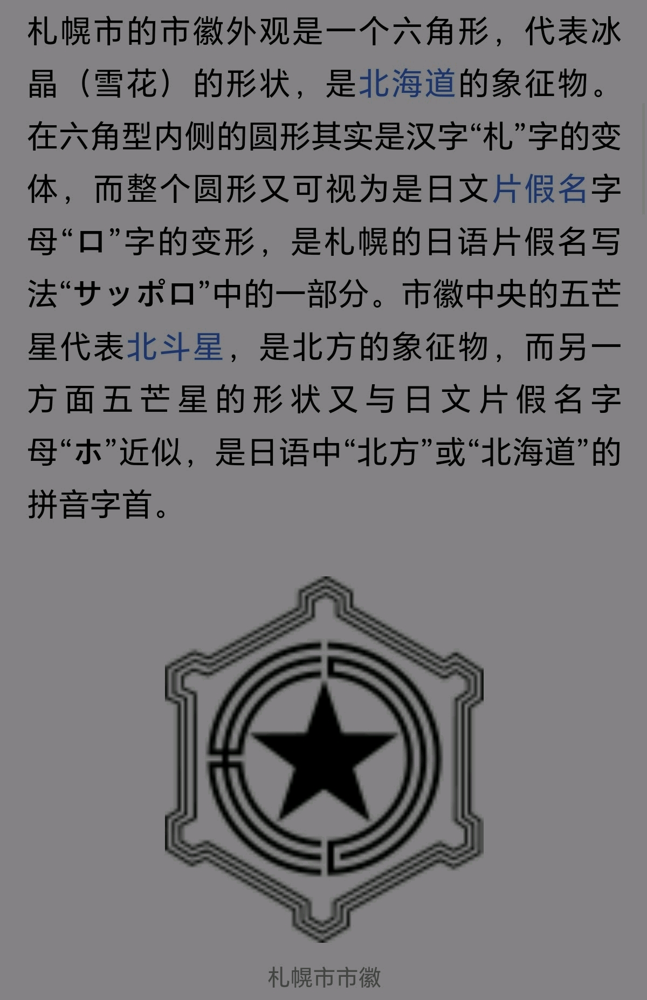
2024-03-11 22:30 | 雁影◇妃:这个有点厉害2024-03-12 00:22 | 灯都安郎🍪:回复 雁影◇妃 :离函馆市也不远😆2024-03-12 00:22 | 灯都安郎🍪:回复 雁影◇妃 :没记错那个北斗星列车的终点站还是起发站就是这个城市吧

m27最早開始提出的概念就是青山要求加入在電影最後場景，至於那個電影最後場景是啥恐怕有大活，以及另外一個最早提出的概念是北海道，至於其他的例如是誰主役以及故事劇情應該都是之後拓展開來的
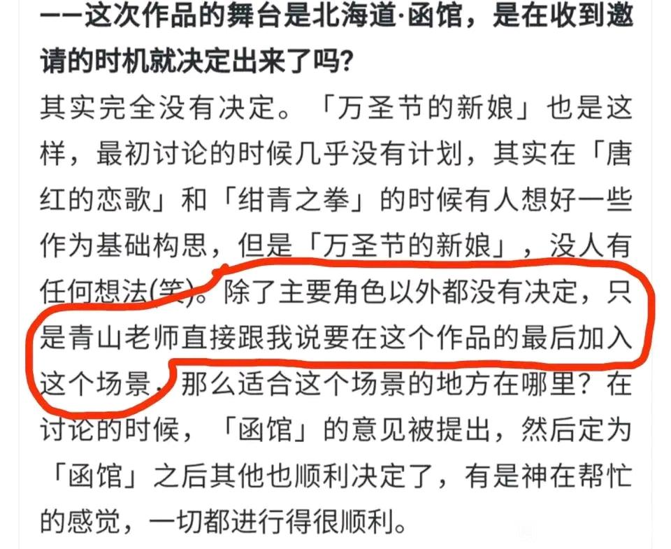
2024-03-11 23:11 | 雁影◇妃:我还是期待所谓的新一原画是新一小时候在北海道的原画2024-03-11 23:18 | 世界上没有真理:回复 雁影◇妃 :我想知道這原畫會不會也有另外一個小朋友？據聲優訪談感覺這次劇場版很勁爆，就是不知道是指基德真相還是另有所指？
搜圣诞树的时候意外发现的这个，不知道有没有说过，这个位于北海道美瑛的网红树，我能看到的最早的贴就是这个19年的，可能日本人更清楚这些？不知道算不算什么有效信息
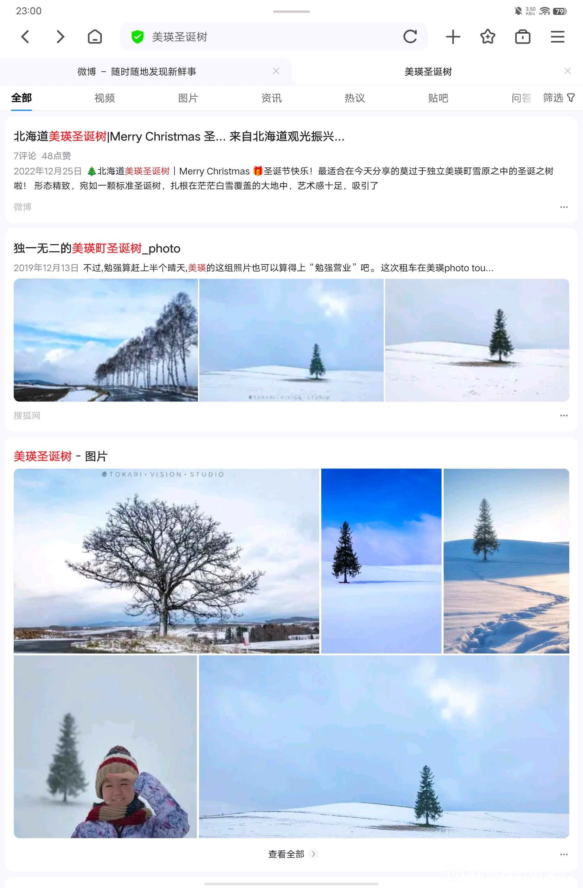
也可能是m27片尾带出初遇论，m28再细说（想起我看速度与激情的感觉，预告片的预告）
M27到底会不会有初遇论的线索，急
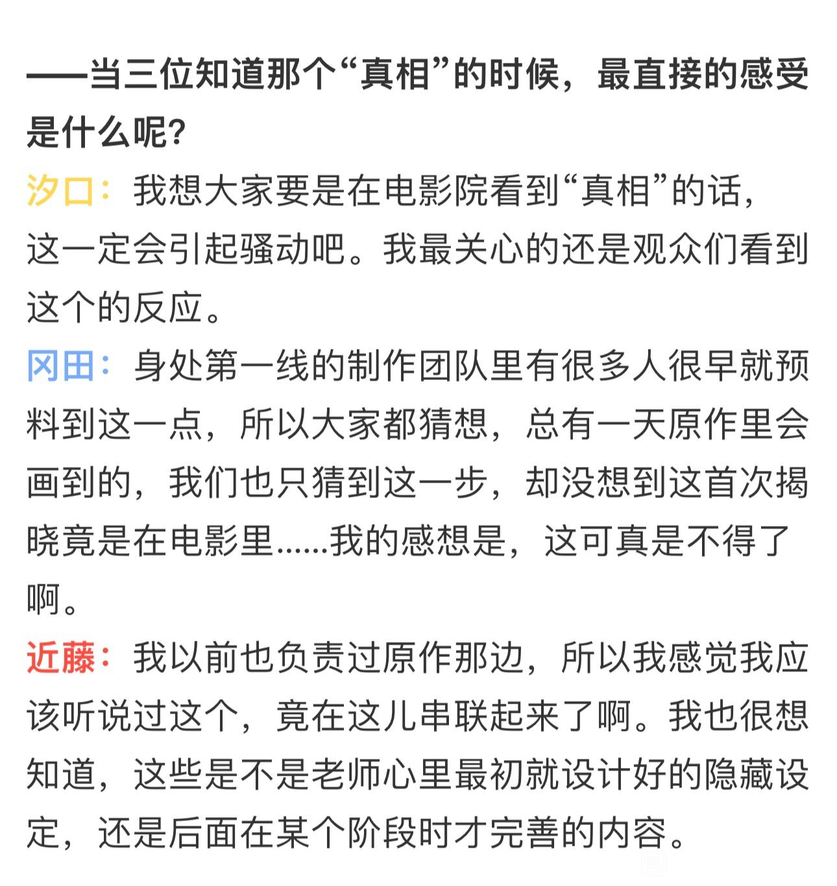
2024-03-21 08:22 | 即将02的废物月:感觉这是基德的真相2024-03-21 08:23 | 世界上没有真理:我也很急啊！可是現在訪談裡不是談的平和告白就是毛利蘭助攻抑或是基德真相，完全看不出是不是我們想的那樣？2024-03-21 08:26 | 即将02的废物月:回复 世界上没有真理 :反正最低期待就是看到28主役是谁2024-03-21 08:30 | 世界上没有真理:回复 即将02的废物月 :也只能先這樣了，不然就是彩蛋透露線索也有可能2024-03-21 08:37 | 即将02的废物月:回复 世界上没有真理 :按ost的译名来看，最后应该是个快新场景，但是依旧不排除片尾彩蛋的可能性（虽然线索有可能是在剧中加啦）2024-03-21 08:52 | 世界上没有真理:回复 即将02的废物月 :可是這次電影符號很多，又是五角星星六角星星又是櫻花雪花然後又北海道，期待值會被拉高，可是看電影訪談又感覺只是基德真相2024-03-21 09:01 | 雁影◇妃:回复 世界上没有真理 :最劲爆的剧情反而前期宣传是一点风声不透露的2024-03-21 09:03 | 即将02的废物月:回复 世界上没有真理 :其实这种符号，怎么说呢，这种其实算是那种，不希望一般人能看出来的那种意思，其实他们的预期估计也是别人看不出来啦，“出乎意料”大概也是这个意思，所以不用太患得患失2024-03-21 09:03 | 即将02的废物月:回复 雁影◇妃 :当时还很鸡贼的透露了一点点消息：“73亲自修改了一处画面，是某个角色在水下的场景”2024-03-21 09:09 | 即将02的废物月:回复 世界上没有真理 :算是那种，“给侦探的奖励”吧，信息肯定不是烟雾弹，但是怎么放出来就不一定了2024-03-21 09:17 | 世界上没有真理:回复 雁影◇妃 :對啊！而且哀一點預告都沒有太不尋常了，試映會又被取消，到底會不會來個大的？2024-03-21 09:20 | 世界上没有真理:回复 即将02的废物月 :有可能，彩蛋搞不好就只有我們看得懂的線索，可是聲優又都說很勁爆，所以到底是基德還是其他的？真的是很吊人胃口2024-03-21 09:24 | 即将02的废物月:回复 世界上没有真理 :魔术师揭露真相前，只有小部分观众能看懂很正常啦